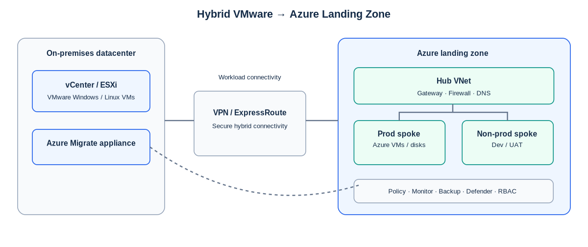
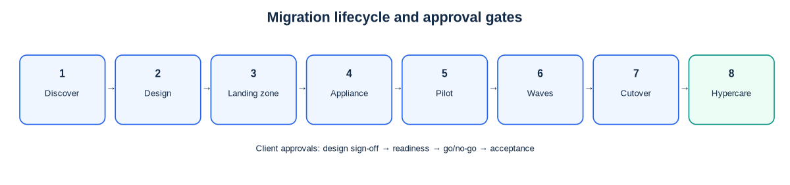
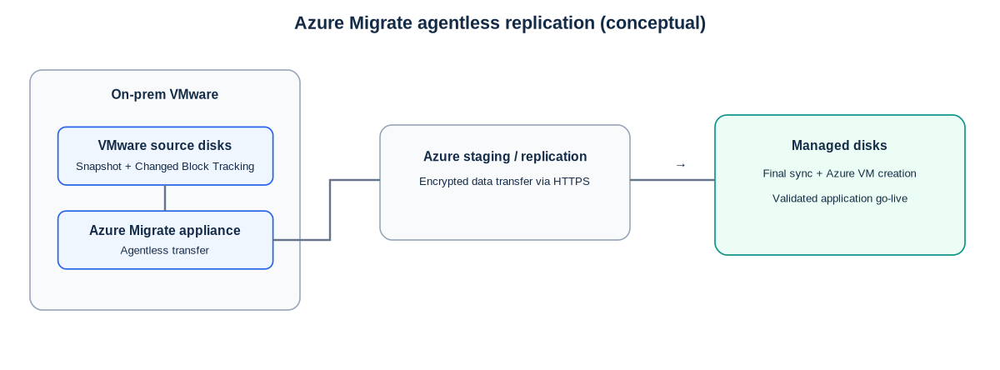
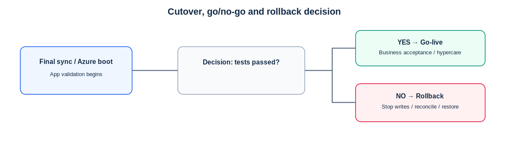

Reference architecture and workflow diagrams


01Executive overview and migration strategy
Role: Hybrid Cloud / VMware-to-Azure Migration Architect. Baseline target is native Azure IaaS VMs via Azure Migrate; Azure VMware Solution (AVS) is a separate option when VMware continuity is a requirement.
- Confirm business drivers: datacenter exit, licensing, risk reduction, modernization, availability, cost, and regulatory constraints.
- Choose workload disposition per application: rehost, replatform, refactor, retain, retire, or replace.
- Agree measurable success criteria: application availability, acceptable downtime, RTO/RPO, performance, security posture, budget, and operational ownership.
- Use stage gates: discovery accepted → HLD/LLD approved → landing zone ready → pilot passed → wave go/no-go → hypercare closure.
02Customer workshops and governance
Run cross-functional discovery before selecting the implementation detail.
- Executive workshop: scope, cost envelope, success outcomes, decision rights, milestone dates, governance, constraints.
- VMware workshop: vCenter versions, ESXi clusters, HA/DRS, datastores, VM hardware versions, snapshots, tools, SAN/NAS, backups.
- Application workshop: criticality, owners, inbound/outbound integrations, dependencies, data consistency, cutover windows, vendor support.
- Network workshop: CIDR overlap, VLANs, ExpressRoute/VPN, IPAM, routing, DNS, proxies, ports, latency and throughput.
- Security workshop: identity, RBAC/PIM, secrets, encryption, policies, monitoring, regulated data and exceptions.
- Operations workshop: monitoring, CMDB, patching, backup/restore, incident response, ITSM change and escalation process.
- Establish technical decision forum, architecture review board, steering cadence, daily cross-region delivery sync and client sign-off workflow.
| Artifact | Owner / use |
|---|---|
| Workshop notes | Architect + domain leads |
| VM and application inventory | VMware/application leads |
| NFR register | Architect + client |
| RAID / decision log | PM + architect |
| Approved solution principles | Architecture review board |
03Current-state discovery and dependency assessment
Establish an authoritative source inventory and reconcile it with the CMDB and Azure Migrate.
- Export VM inventory using RVTools/PowerCLI and Azure Migrate discovery. Capture VM ID, OS, vCPU, RAM, used/provisioned disk, datastores, network, VMware tools, hardware, dependencies, criticality, owner.
- Collect utilization over a representative business period; account for peaks, month-end jobs, seasonal workloads and storage IOPS.
- Map application flows: web → application → database, AD/DNS, file shares, SMTP, batch jobs, API endpoints, certificates and licensing endpoints.
- Flag domain controllers, clustering, shared disks, physical dependencies, unsupported OS, static IP assumptions, latency-sensitive services and vendor lock-in.
- Classify each workload as ready, conditionally ready, blocked or excluded; record remediation and acceptance ownership.
| Field | Example |
|---|---|
| VM | PROD-APP-01 |
| OS | Windows Server 2019 |
| CPU / RAM | 8 vCPU / 32 GiB |
| Disks | 500 GiB provisioned / 310 GiB used |
| Dependencies | SQL-DB-01; AD/DNS; file share |
| NFR | RTO 4h / RPO 1h |
| Wave | 3 (production, after pilot) |
04Azure landing zone: management, subscriptions and governance
Use a governed platform foundation before creating production VMs.
- Confirm Microsoft Entra tenant and subscription boundaries; use management groups for platform and workload policy scope.
- Create or provision platform subscriptions for connectivity, identity, management/security as required and workload subscriptions for production and non-production.
- Create resource groups and define naming, tagging, region restrictions, ownership and cost-center attribution.
- Assign least-privilege RBAC to Entra groups; use PIM for eligible privileged roles. Avoid standing Owner at broad scope.
- Deploy Azure Policy guardrails for location, tagging, public endpoints, allowed VM types, security and diagnostic configurations.
- Provision centralized logging, alerting, budgets, resource locks where appropriate and security posture management.
- Validate quota and capacity for chosen Azure regions, VM families, disks and networking SKUs.
05Hybrid network, connectivity and DNS
Preferred example: ExpressRoute or Site-to-Site VPN to a hub VNet with securely routed production and nonproduction spokes.
- Create nonoverlapping address plan, e.g. on-prem 10.10.0.0/16; hub 10.0.0.0/16; prod 10.20.0.0/16; nonprod 10.30.0.0/16.
- Create hub VNet, gateway subnet, service-specific firewall subnets, production/non-production spokes and required subnet delegation.
- Configure ExpressRoute gateway or VPN gateway; validate BGP, peering and failover. Determine if Azure Virtual WAN is better suited for complex global connectivity.
- Create VNet peering and configure gateway transit/remote gateway settings where supported and required.
- Deploy Azure Firewall or approved NVA; use UDRs, NSGs and policy to enforce east-west and north-south traffic controls.
- Implement hybrid DNS using agreed conditional forwarders, DNS Private Resolver or equivalent supported model. Validate AD-integrated DNS.
- Test routes, required TCP ports, MTU, name resolution, application latency and path symmetry before migration.
| Source | Destination | Typical TCP port / note |
|---|---|---|
| Appliance | vCenter | 443 |
| Appliance | ESXi hosts | 902 |
| Appliance | Required Azure endpoints | 443 HTTPS |
| Admin workstation | Appliance configuration manager | 44368 HTTPS |
| App tier | DB tier | App-specific (e.g. SQL 1433) |
06Identity, security and nonfunctional requirements
AD, DNS, access control and application authentication must remain valid during the hybrid phase.
- Inventory Active Directory forests, sites, subnets, service accounts, GPOs, certificates, PKI and DNS dependencies.
- For domain controllers, consider deploying new Azure-hosted DCs and replicating rather than treating them as normal lift-and-shift servers.
- Validate Kerberos, LDAP/LDAPS, time synchronization, hybrid DNS and application service principals.
- Implement RBAC, PIM, Key Vault, disk encryption, network policy, Defender for Cloud and centralized audit logging as approved.
- Agree NFR acceptance criteria for latency, IOPS, availability, data integrity, RTO/RPO, retention and operational SLAs.
- Prove backup restoration and DR exercises; a successful VM boot is not evidence of application recoverability.
07Azure Migrate project and appliance deployment
Use current Microsoft documentation to confirm UI labels, VMware support matrix and networking prerequisites; portal steps may change.
- Open Azure Migrate in Azure Portal; create project in approved subscription/resource group and choose project geography.
- Choose VMware discovery; generate appliance registration key; download the supported OVA appliance.
- In vSphere Client deploy OVF template into an approved cluster/datastore/management network and power on the appliance.
- Configure guest network/DNS/proxy/time and open appliance configuration manager (typically https://<appliance-ip>:44368).
- Validate outbound Azure endpoints, connectivity to vCenter/ESXi, certificates, agentless prerequisites and VMware VDDK as documented.
- Register appliance to Azure Migrate project; provide read-only discovery credentials with documented VMware permissions.
- Add guest OS credentials only if approved and required for software inventory and dependency discovery.
- Start inventory discovery; reconcile VMs against vCenter and troubleshoot omissions.
08Assessment, sizing and cost modeling
Create Azure VM assessments and review performance-based recommendations, storage tiers and readiness blockers.
- Create Azure VM assessment for discovered VMware servers; select approved target region and Azure cost/pricing assumptions.
- Select performance-based sizing only if collected history captures representative peaks; otherwise use as-on-premises with explicit risk acceptance.
- Evaluate CPU/RAM, disk IOPS/throughput, NIC count, boot mode, operating system version, source disk limits and support constraints.
- Compare VM SKUs, zones, managed disk options, available licensing benefits, reservations/savings plans and run-rate.
- Classify ready / conditional / not ready and assign remediation owners; obtain application owner sign-off on performance assumptions.
- Publish assessment reports, target mapping table, monthly cost estimate and transition risk.
09Replication setup and monitoring
For VMware agentless migration, Azure Migrate uses VMware snapshot/CBT-based replication and stages data in Azure before Azure VM creation.

- Confirm appliance health, VMware snapshot compatibility, replication bandwidth, destination quotas and target networking.
- In Azure Migrate migration workflow choose source VMware machines and target Azure VM destination.
- Select subscription, region, resource group, VNet/subnet, VM size, disk type, availability/security settings and required replication configuration.
- Enable initial replication; monitor storage ingestion, changed-block transfer, snapshots and replication health.
- Investigate health errors, CBT resets, source datastore pressure, VMware snapshot consolidation, disk latency, insufficient upload capacity.
- Keep application and security teams informed of anticipated downtime, final sync needs and expected configuration changes.
10Pilot and test migration
Use isolated test networks to validate migrated workloads without competing with production.
- Select a representative set: Windows, Linux, multi-disk, AD-dependent and a dependent application pair.
- Run Azure Migrate Test migration to an isolated test VNet where production naming/IP collisions cannot occur.
- Validate OS startup, services, NIC routes, DNS, AD connectivity, load balancer health, certificates, file mounts, SQL access and scheduler behavior.
- Test application transactions, performance, security controls and restore procedures; document defects and remediation.
- Perform supported test migration cleanup and collect pilot business acceptance before scaling waves.
| Validation | Evidence |
|---|---|
| VM boots | Azure VM provisioning and guest logs |
| Network & DNS | Route, resolver, port tests |
| Application | Business owner smoke test |
| Performance | Baseline and load results |
| Recovery | Backup policy and restore test |
| Security | NSGs, logging, vulnerability checks |
11Wave planning and readiness gates
Group dependent applications by business criticality, coupling and cutover constraints rather than arbitrary VM counts.
- Wave 0: pilot VMs; wave 1: low-risk nonproduction; wave 2: independent internal apps; wave 3: production groups; wave 4: legacy/complex workloads.
- For every VM, record migration tool/method, source/destination, owner, dependency group, data volume, change ID, cutover window, validation, rollback and hypercare.
- Create integrated schedule for replication windows, firewall change approval, DNS work, storage and backup onboarding.
- Conduct go/no-go review: target capacity, replication, business owner, security, RTO/RPO, cutover bridge and rollback readiness.
| Wave | Example | Gate |
|---|---|---|
| 0 | Pilot Win/Linux | Infrastructure and app validated |
| 1 | Dev / test | Repeatable migration tested |
| 2 | Internal business apps | Dependencies validated |
| 3 | Critical production | Business go/no-go |
| 4 | Legacy / special | Exception plan approved |
12Production cutover runbook
Application-consistent cutover must be rehearsed and approved. Exact order varies by database and application.

- Before window: approved change, sign-offs, rollback checkpoint, current recovery point, replication health and readiness bridge.
- Announce start; stop batch jobs, scheduled tasks and external integration traffic; quiesce writes using application/DB owner procedure.
- Stop application services and shut down source VMware VM when required for final sync and avoidance of data loss.
- Initiate final Azure Migrate migration; watch replication completion and target Azure VM provisioning.
- Validate boot, disks, IP/DNS, identities, certificates, app services, DB integration, security and monitoring.
- Switch DNS/load balancer/endpoints; perform smoke tests and business transactions; measure response times.
- Obtain business sign-off; enable Azure Backup and operational alerts; enter hypercare; record timestamps.
13Rollback and data consistency
Rollback is a controlled business decision, not an automatic button in Azure Migrate.
- At the rollback threshold, stop new Azure writes and declare rollback in the change bridge.
- Determine whether Azure-hosted workload created post-cutover data. Define a tested reconciliation/export procedure before production go-live.
- Restore the original on-prem service only after confirming no dual-write/split-brain risk.
- Reverse DNS, load balancer and integration endpoints; validate data and transaction continuity.
- Communicate status, capture cause, reopen remediation and reschedule after revalidation.
14Backup, DR, security and operations handover
Finish with operational resilience, not just migration completion.
- Apply backup policy to migrated Azure VMs and verify restore to an isolated environment.
- Define regional/AZ DR architecture based on approved RPO/RTO; consider Azure Site Recovery or app-native replication.
- Configure Azure Monitor/Log Analytics, VM insights, alert escalation, Defender posture and patch schedules.
- Update CMDB, DNS/IPAM, monitoring owner, backup inventory, operational runbooks and support contacts.
- Right-size VM/disk after representative observation; remove migration staging assets after validation and approval.
- Complete client acceptance, hypercare exit, decommission authorization, lessons learned and program closure.
15HLD, LLD, architecture decisions and quality assurance
The architect governs design quality and customer approval; domain leads implement details.
- HLD: current/target diagrams, business drivers, alternative solutions, NFRs, security, networking, migration strategy, resilience, operations and risks.
- LLD: subscriptions/resource groups, CIDRs, gateway/firewall, NSG/UDR, DNS, VM SKUs, disks, identity, monitoring, backup, landing-zone policies and code module specifications.
- Maintain Architecture Decision Records (ADRs): options, benefits, trade-offs, costs, risks, recommendation and approver.
- Apply architecture review checklist and ensure every exception has owner, expiry, compensating controls and approval.
- Review Terraform/Bicep modules, remote state and deployment pipelines against approved landing-zone guardrails.
| Decision | Common options |
|---|---|
| Target hosting | Native Azure VM vs AVS |
| Connectivity | VPN vs ExpressRoute vs Virtual WAN |
| Network | Hub/spoke vs Virtual WAN |
| Workload pattern | Rehost / replatform / refactor |
| Resilience | Zone HA / backup / regional DR |
| Automation | Terraform / Bicep |
16Delivery leadership, RAID and steering cadence
Coordinate the US/India engineering workstreams through clear ownership and escalation.
- Assign named leads for VMware, Windows/Linux, networking, security, Azure, storage/backup, applications/databases and migration execution.
- Run daily technical checkpoints and US/India handover; publish blockers and decisions in a single RAID register.
- Run weekly architecture review and client steering update; escalate blockers with business impact and options, not raw technical logs.
- Use scorecards: VM count discovered/assessed/replicating/migrated, success rate, critical defects, cost versus forecast, backup compliance.
- Close waves only on business acceptance, operational ownership and documentation, not only powered-on VM status.
| RAID type | Example / action |
|---|---|
| Risk | WAN upload capacity inadequate → capacity test |
| Assumption | Vendor application Azure support → confirm |
| Issue | Unsupported source OS → remediation plan |
| Dependency | DNS and firewall changes → pre-cutover approval |
17Example validation commands and infrastructure-as-code
Examples are diagnostic and must be adapted to customer network and role permissions.
- Windows: Test-NetConnection sql.internal -Port 1433; Resolve-DnsName app.internal; Get-Service; Get-NetIPConfiguration.
- Linux: ip route; systemctl --failed; df -h; journalctl -p err -n 50; nc -vz database.internal 5432.
- In IaC reviews verify naming, tagging, RBAC, module versions, networking guardrails, remote state access, policy assignment and deployment approval.
- For architecture walkthroughs explain migration controls, decision gates and data consistency tradeoffs rather than merely listing Azure products.
18Architect interview walkthrough and final checklist
Suggested explanation: “I would run discovery workshops, validate VMware inventory and application dependencies, design and approve the Azure landing zone, deploy Azure Migrate, assess and right-size workloads, pilot agentless replication and isolated test migration, organize business-aligned waves, conduct approved cutovers with rollback gates, and lead hypercare, security, backup and operations handover.”
- Be ready to explain Azure Migrate versus Azure Site Recovery and native Azure VMs versus Azure VMware Solution.
- Describe how VMware CBT and the appliance enable incremental replication and why source shutdown/final sync affects consistency.
- Explain how AD/DNS, routing, firewall rules, database dependencies and application latency influence wave selection.
- Explain data reconciliation during rollback and why double-writing the source and target is unsafe.
- Explain how HLD, LLD, ADRs, NFRs, RACI, RAID and steering reports create client-controlled decisions.
Official Microsoft references
- Microsoft Azure Migrate documentation: https://learn.microsoft.com/en-us/azure/migrate/
- VMware migration tutorial: https://learn.microsoft.com/en-us/azure/migrate/tutorial-migrate-vmware
- VMware discovery tutorial: https://learn.microsoft.com/en-us/azure/migrate/tutorial-discover-vmware
- VMware support matrix: https://learn.microsoft.com/en-us/azure/migrate/migrate-support-matrix-vmware-migration
- Azure landing zones: https://learn.microsoft.com/en-us/azure/cloud-adoption-framework/ready/landing-zone/
- Azure networking design: https://learn.microsoft.com/en-us/azure/cloud-adoption-framework/ready/landing-zone/design-area/network-topology-and-connectivity
All sample architectures, sizes, CIDRs, wave names, and timing assumptions are illustrative and must be validated for the customer.